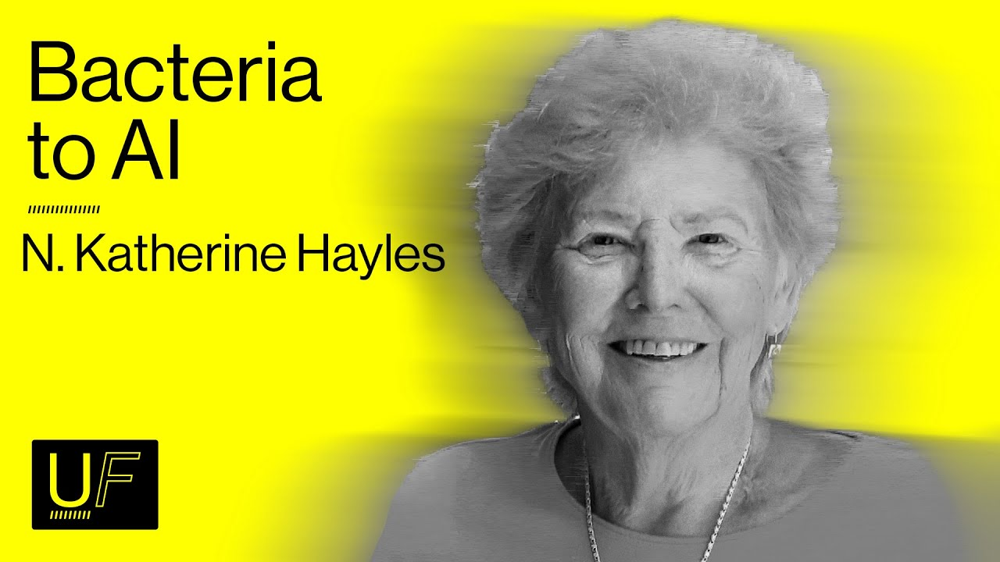
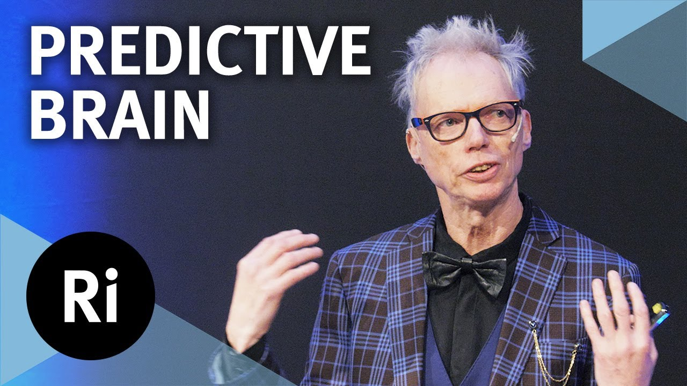

Katherine Hayles — Consciousness Is Not Necessary for Cognition
On the integrated cognitive framework, How We Became Posthuman, widening the circle of care, nonconscious cognition, and relationality with synthetic intelligence.
Videos
Each reel links to ontology concepts it develops — shared nodes show where the talks overlap. Click a thumbnail node or concept to open it.
Reels curated by Marlon Barrios Solano. Their content feeds the ontology.
Watch, then use Voice to talk through what each reel contributes to the graph.
On the integrated cognitive framework, How We Became Posthuman, widening the circle of care, nonconscious cognition, and relationality with synthetic intelligence.

Katherine Hayles Not ingestedKatherine Hayles on Urgent Futures with Jesse Damiani — integrated cognitive framework, nonconscious cognition, LLMs, Umwelt, sympoiesis, and posthuman futures in the era of AI.

Andy Clark Not ingestedRoyal Institution lecture on predictive processing — brains as prediction machines, controlled hallucination, precision weighting, Karl Friston and active inference, chronic pain, placebo, and hacking the predictive brain.